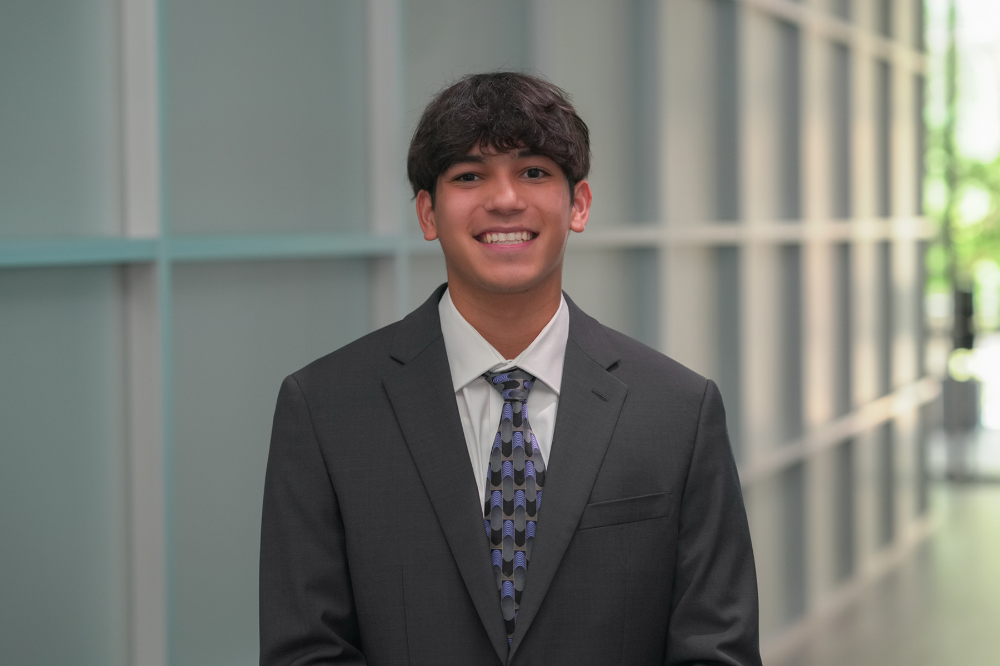

Howdy! My name is Luke Gutierrez and I am junior computer engineering major at Texas A&M University. I have been an aspiring engineer for as long as I can rememeber and through my coursework and work experience, I have developed proficiencies in both hardware and software related topics such as circuit design, signals and systems, data structures, and computer systems. Recently, I have accepted a full time offer to work at IBM as a backend software engineer starting in July of 2026. I am very excited to start my career in software engineering and I am looking forward to the opportunities and challenges that lie ahead.
Outside of school, I enjoy staying active and being outside. I hike, run, boulder, and I am an active member of the Texas A&M Handball Club, which competes around the country. I have recently picked up racquet sports like tennis and pickleball. I am also a member of the Texas A&M Brazilian Jiu Jitsu club, where I have been training for the past year. I have recently taken an interest in golf and am looking forward to learning. I recently started swimming again. I swam competitively for 13 years.
